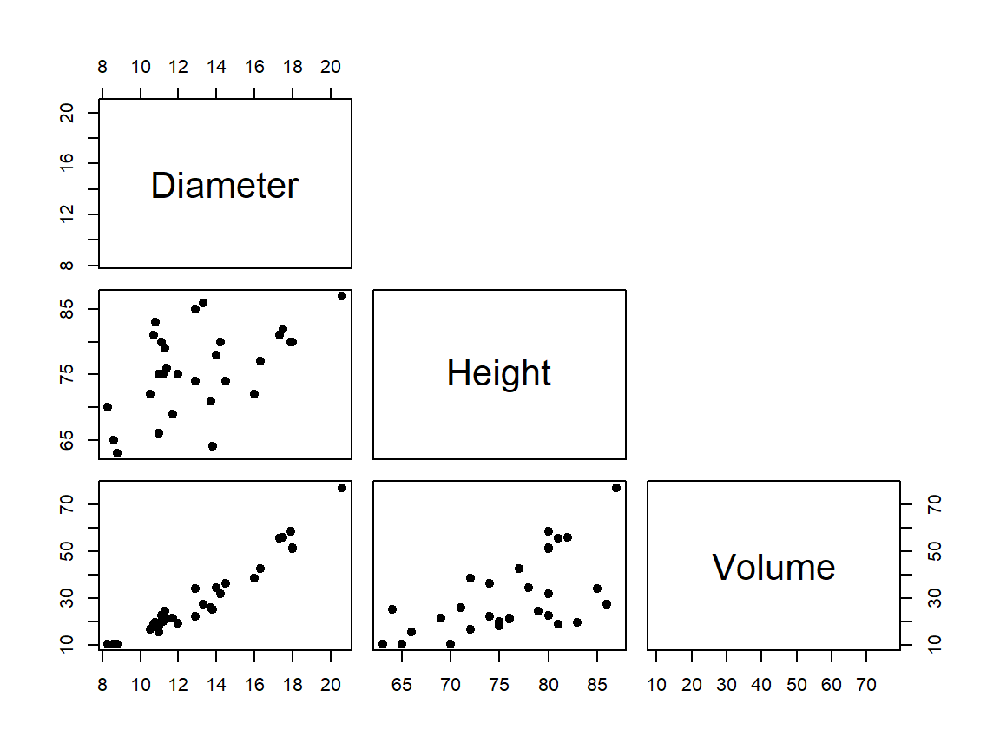
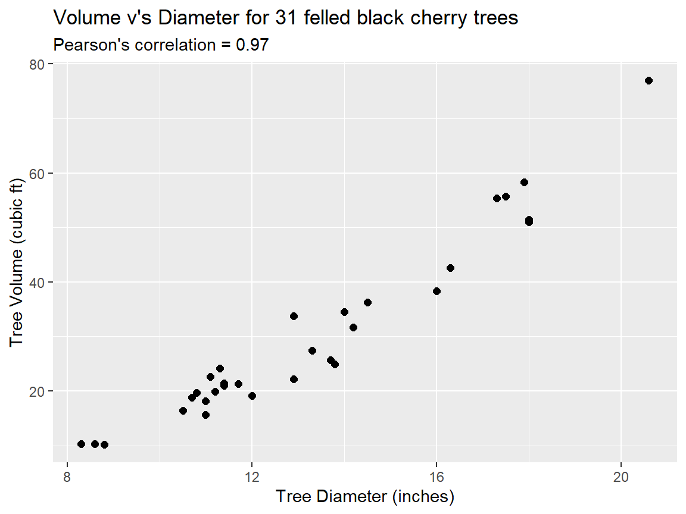
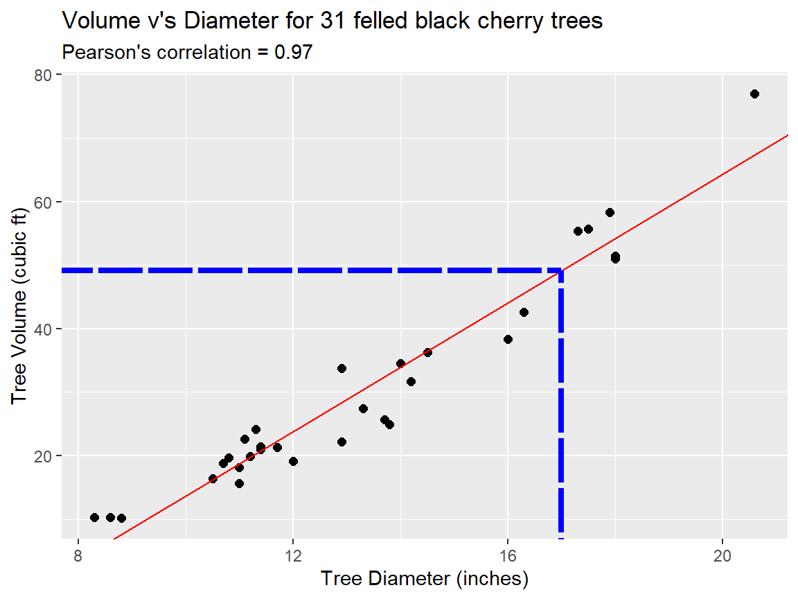

Section 12 Relationships in data
In this section, let’s consider a built-in data frame in R called trees that contains measurements of the height (in ft), volume (in cubic ft) and diameter (in inches; measured at 4ft 6in above the ground) of the timber in 31 felled black cherry trees. We can load the data into the R environment as follows. (Note: the help documentation for this data set [at help(trees)] indicates that the diameter is erroneously labelled ‘Girth’ in the data frame in R - we will correct this here.)
## Diameter Height Volume
## 1 8.3 70 10.3
## 2 8.6 65 10.3
## 3 8.8 63 10.2
## 4 10.5 72 16.4
## 5 10.7 81 18.8
## 6 10.8 83 19.7An initial exploration for any relationships between variables in a data set can be made via plotting. Here, we will use pairwise scatter plots to explore for pairwise relationships in the trees data, using the ‘base graphics’ command pairs():

Clearly, the Diameter and Volume of the trees has the strongest relationship, and the pairwise relationships between these variables and Height are weaker. In all cases, the relationships look to be relatively linear. Let’s now look into how we can quantify these relationships more formally.
12.1 Covariance and correlation - recap
Let’s first consider the relationship between the diameter and volume of the trees. For the \(i\)-th tree, let \(x_i\) be its diameter (in inches) and \(y_i\) its volume (in cubic ft), for \(i=1,\ldots,31\). So, we have paired observations \((x_1=8.3, y_1=10.3)\), \((x_2=8.6, y_2=10.3)\), \((x_3=8.8, y_3=10.2)\) and so on.
12.1.1 Covariance
Definition 12.1 (Covariance) For pairs of observations \((x_1,y_1), (x_2, y_2),\ldots,(x_n,y_n)\) we define their sample covariance to be \[ s_{xy}=\frac{1}{n-1}\sum_{i=1}^n(x_i - \bar{x})(y_i - \bar{y}), \] where \(\bar{x} = \frac{1}{n}\sum_{i=1}^n x_i\) and \(\bar{y} = \frac{1}{n}\sum_{i=1}^n y_i\).
12.1.2 Pearson’s correlation coefficient
Covariances aren’t very informative on their own, as they will depend on the scale of measurement of the variables. Correlation coefficients are scale independent. There are different versions of the correlation coefficient.
Definition 12.2 (Pearson's correlation coefficient) For pairs of observations \((x_1,y_1), (x_2, y_2),\ldots,(x_n,y_n)\) we define Pearson’s correlation coeffcient to be \[ r_{xy}=\frac{s_{xy}}{s_xs_y}, \] with \(s_{xy}\) the covariance defined above, and \[ s_x = \sqrt{\frac{1}{n-1}\sum_{i=1}^n(x_i - \bar{x})^2}, \] \[ s_y = \sqrt{\frac{1}{n-1}\sum_{i=1}^n(y_i - \bar{y})^2}. \]
Pearson’s correlation coefficient measures the strength of the linear association between the two variables and is bounded between -1 and 1. A positive correlation implies that as one quantity increases, the other is expected to increase, and a negative correlation implies that as one quantity increases, the other is expected to decrease.
12.1.2.1 Calculating Pearson’s correlation coefficient in R
To calculate Pearson’s correlation coefficient between the variables Diameter and Volume in the data frame trees, we use the command
## [1] 0.9671194and so \(r_{xy}=0.97\) to 2 d.p. This value is very large and positive in sign (very close to 1), and suggests a strong positive relationship between these two variables.
12.1.3 Spearman’s correlation coefficient
An alternative to Pearson’s correlation coefficient is Spearman’s correlation coefficient.
Definition 12.3 (Spearman's correlation coefficient) For pairs of observations \((x_1,y_1), (x_2, y_2),\ldots,(x_n,y_n)\) we define Spearman’s correlation coefficient to be Pearson’s correlation coefficient calculated on the the ranks of observations.
By using the ranks of the observations, Spearman’s correlation coefficient identifies the strength of any monotonic relationship in the data.
12.1.3.1 Example
For illustration, suppose we have the following data
| \(i\) | 1 | 2 | 3 | 4 | 5 | 6 |
|---|---|---|---|---|---|---|
| \(x_i\) | 68 | 2 | 40 | 20 | 85 | 97 |
| \(y_i\) | 73 | 26 | 37 | 1 | 63 | 68 |
We first calculate the ranks of the observations (if \(x_i\) gets a rank of 1, it means \(x_i\) was the smallest out of \(x_1,\ldots,x_n\)):
| \(i\) | 1 | 2 | 3 | 4 | 5 | 6 |
|---|---|---|---|---|---|---|
| rank(\(x_i\)) | 4 | 1 | 3 | 2 | 5 | 6 |
| rank(\(y_i\)) | 6 | 2 | 3 | 1 | 4 | 5 |
We then calculate Pearson’s correlation coefficient on the ranks, as if we have six pairs of observations (4, 6), (1, 2), \(\ldots\) (6, 5).
12.1.3.2 Calculating Spearman’s correlation coefficient in R
In R, we just include an extra argument in the cor() command:
## [1] 0.7714286(If we don’t specify a method, the default is to use Pearson’s.) To illustrate that this is just Pearson’s correlation coefficient calculated on the ranks, we can obtain the rankings in R with the command rank(), and then compare the above with
## [1] 4 1 3 2 5 6## [1] 6 2 3 1 4 5## [1] 0.771428612.1.4 Correlations for the trees data set
We calculate the Pearson correlations between the variables of interest using the following code:
- The second line excludes any rows with missing values (the
cor()command won’t work otherwise); - the third line will produce a matrix of Pearson correlations, in the form above;
- the fourth line rounds all the numbers to two decimal places.
The code above produces the following output:
## Diameter Height Volume
## Diameter 1.00 0.52 0.97
## Height 0.52 1.00 0.60
## Volume 0.97 0.60 1.00Note that the correlation of any variable with itself is always 1. By looking at these correlations (in absolute value), tentatively, we may conclude the following:
- trees with a larger diameter are likely to have a larger volume (correlation of 0.97);
- taller trees tend to have a larger diameter (correlation of 0.52) and a larger volume (correlation of 0.60).
These correlations match to the inferences we made using the pairwise scatter plots above. (The correlations are all fairly similar if we use Spearman’s correlation instead.)
12.2 Simple linear regression
Our scatter plots and correlation values indicate to us that we have a linear relationship between the Diameter (\(x\)) and Volume (\(y\)) of the black cherry trees:
library(tidyverse)
ggplot(data = trees, aes(x = Diameter, y = Volume)) +
geom_point(size = 2) +
labs(x = "Tree Diameter (inches)", y = "Tree Volume (cubic ft)",
title = "Volume v's Diameter for 31 felled black cherry trees",
subtitle = paste0("Pearson's correlation = ",round(cor(trees$Diameter,trees$Volume),2)))
However, this doesn’t give us any information about what the straight line of the relationship actually is. How is the Volume related to the Diameter? To explore this, we can ‘model’ the relationship using a simple linear regression model (a linear model with one independent variable) to evaluate the linear relationship in detail.
This linear model is defined as follows: \[ y_{i} = \beta_{0} + \beta_{1}x_{i} + \epsilon_{i} \] where:
- the \(x\)-variable (
Diameter) is called the independent variable with observed values \(x_{i}\); - the \(y\)-variable (
Volume) is called the dependent variable with observed values \(y_{i}\);
** We will use the independent variable to predict the dependent variable. **
- \(\beta_{0}\) and \(\beta_{1}\) are the model parameters:
- \(\beta_{0}\) is the intercept of the straight line (\(y\), at \(x=0\));
- \(\beta_{1}\) is the slope of the straight line (the change in the dependent variable \(y\) for every unit change in the independent variable, \(x\));
- \(\epsilon\) is a residual error term (we assume that \(y\) is related to \(x\) with some random error).
To ‘fit’ the model to the data we must estimate the parameters \(\beta_{0}\) and \(\beta_{1}\) from the data to obtain \(\hat{\beta_{0}}\) and \(\hat{\beta}_{1}\). The most common approach is estimation via ‘least squares’, where the values \(\hat{\beta_{0}}\) and \(\hat{\beta}_{1}\) are selected such that the fitted line minimises the sum of squared residual errors to the data points. The plot below illustrates this method:

The parameter estimates are selected such that for the fitted line they correspond to (shown in red), the sum of the squared residuals (the distances from the data points to the fitted line for the dependent variable \(y\), shown in blue, squared) is minimised.
It turns out that there is an analytical solution for the parameter estimates here:
\[ \hat{\beta}_{1} = \frac{s_{xy}}{s_x^2} = r_{xy}\frac{s_{y}}{s_{x}} \qquad \textrm{and} \qquad \hat{\beta}_{0} = \bar{y} - \hat{\beta}_{1}\bar{x} \]
where \(s_{x}\), \(s_{y}\), \(s_{xy}\) and \(r_{xy}\) are as defined above in the Pearson’s correlation coefficient section. (See MPS223 - Statistical Inference and Modelling, Semester 2 for the full details of this result.)
12.2.1 Fitting the simple linear regression model in R
In practise, we can use R to fit the simple linear regression model and obtain the parameter estimates \(\hat{\beta_{0}}\) and \(\hat{\beta}_{1}\). To fit this model in R, we use the lm() command:
The first argument of this command holds the details of our model specification and is in the format of a ‘formula’: \(y \sim x\), which states that we want to model/predict our dependent variable \(y\) (Volume) as a linear function of our independent variable \(x\) (Diameter).
We can view the full details of the fitted model using the summary command:
##
## Call:
## lm(formula = Volume ~ Diameter, data = trees)
##
## Residuals:
## Min 1Q Median 3Q Max
## -8.065 -3.107 0.152 3.495 9.587
##
## Coefficients:
## Estimate Std. Error t value Pr(>|t|)
## (Intercept) -36.9435 3.3651 -10.98 7.62e-12 ***
## Diameter 5.0659 0.2474 20.48 < 2e-16 ***
## ---
## Signif. codes: 0 '***' 0.001 '**' 0.01 '*' 0.05 '.' 0.1 ' ' 1
##
## Residual standard error: 4.252 on 29 degrees of freedom
## Multiple R-squared: 0.9353, Adjusted R-squared: 0.9331
## F-statistic: 419.4 on 1 and 29 DF, p-value: < 2.2e-16Let’s briefly examine the output here:
- At the top the output repeats the
Call, defining the model we have asked it to fit. - Then, it provides information of the
Residuals. - Then, we have the information on the
Coefficients- our parameter estimates for \(\hat{\beta_{0}}\) (‘intercept’) and \(\hat{\beta}_{1}\) (‘Diameter’) [R will use the independent variable’s name in the call here]). In this table:- the first column holds the parameter estimates;
- the second column provides an uncertainty estimate for each parameter estimate (these should be small compared to the estimate);
- then the final 2 columns show the results of t-test’s on the importance of the inclusion of each parameter estimate in the model.
- Finally, at the bottom we have more information on the goodness of fit of the model. Particularly, the value of \(R^2\) (labelled
Multiple R-Squared) indicates the percentage of the variance in the data of the dependent variable that is explained by the model.
For a simple linear regression model, the value of \(R^2\) is related to the Pearson’s correlation co-efficient: \(R^2=r_{xy}^2\).
[This is not true for a more complex linear model that contains more than 1 independent variable. In that case \(R^2\) still exists, but it is no longer the same as the correlation as you have more dimensions, and so are no longer fitting a straight line.]
From the output above, we can state the following:
- \(\hat{\beta}_{0} = -36.9\) with error \(3.37\).
- \(\hat{\beta}_{1}= 5.07\) with error \(0.25\).
- Both \(\hat{\beta}_{0}\) and \(\hat{\beta}_{1}\) are needed in the model.
- The model explains 94% of the variance in the output, Volume.
- The fitted regression line from our linear model is: \[ y_{i} = -36.9 + 5.07x_{i} \] (Volume = -36.9 + 5.07 x Diameter). We can add the regression line to our scatter plot directly as follows:
ggplot(data = trees, aes(x = Diameter, y = Volume)) +
geom_point(size = 2) +
labs(x = "Tree Diameter (inches)", y = "Tree Volume (cubic ft)",
title = "Volume v's Diameter for 31 felled black cherry trees",
subtitle = paste0("Pearson's correlation = ",round(cor(trees$Diameter,trees$Volume),2))) +
geom_abline(slope = coef(trees_lm)[["Diameter"]],
intercept = coef(trees_lm)[["(Intercept)"]],color = "red")
Or, alternatively, we can use the geom_smooth() option in ggplot to generate and add the linear model fit as a trend line. Here, we must use the argument method='lm' to obtain a linear fit (as a default, geom_smooth() applies a non-linear model trend, the details of which are beyond the scope of MPS223).
ggplot(data = trees, aes(x = Diameter, y = Volume)) +
geom_point(size = 2) +
labs(x = "Tree Diameter (inches)", y = "Tree Volume (cubic ft)",
title = "Volume v's Diameter for 31 felled black cherry trees",
subtitle = paste0("Pearson's correlation = ",round(cor(trees$Diameter,trees$Volume),2))) +
geom_smooth(method='lm')
A nice feature of this plotting approach is that geom_smooth() automatically includes a 95% confidence interval around the fitted linear regression line. However, we note that the actual details of the line itself are not given by this approach and must be obtained by fitting the simple linear regression model directly, as described above.
12.2.2 Prediction from the fitted model
Our fitted model (the estimated linear regression equation) can be used to predict our dependent variable \(y\) (the volume of the tree, in cubic ft) given the value of our independent variable \(x\) (the diameter of the tree, in inches, measured at 4ft 6in above the ground).
12.2.2.1 Example
If we measure a tree diameter of \(x = 17\) inches, what is the predicted volume of this tree from our model?
Computing this prediction manually, using the formula: \[ \hat{y} \;=\; -36.9 + 5.07x \;=\; -36.9 + (5.07\times17) \;=\; 49.3 \textrm{ cubic feet (to 1 d.p.).} \]
Computing this prediction manually, using the plot: 
Computing this prediction using R:
## $fit
## 1
## 49.1761
##
## $se.fit
## [1] 1.201876
##
## $df
## [1] 29
##
## $residual.scale
## [1] 4.251988The standard error on this predicted value is very small compared to the predicted value itself. This suggests we have confidence in the accuracy of this prediction.
When we use a statistical model to make predictions, we must be careful with respect to extrapolation. The fitted model only has information about the dependent variable \(y\) within the range of the data of the independent variable, \(x\). Outside the range of \(x\), predictions will have much larger uncertainty and may not be valid.
For example, for the prediction of the tree volume \(y\) here, the smallest tree diameter \(x\) measured is >8 inches. The intercept of the fitted line is (\(x=0\), \(y=-36\)), which means that a very small diameter will result in negative volume being estimated. Hence, the model is not valid for very small tree diameters and such extrapolation would yield impossible results.
12.3 Exploring variation over time
When a variable in a data set varies over time it may be described as a time series variable and we may be interested in understanding that variation over time better.
A time series is an ordered collection of observations, obtained at successive times and collected in equally spaced time intervals. Time series occur in many application areas, and in particular relevance to our course project, in weather forecasting.
There is a whole branch of statistical modelling and inference techniques that are dedicated to time series analysis - we will explore some key features of a time series here from a simpler EDA perspective, but we will not cover the details of full time series modelling and forecasting - if you are interested in formally modelling time series data, you might want to consider taking the year 3 module: MPS319 - Time Series next year.
In time series data, some key patterns in the data that we might explore are:
- A trend in the data - does the data show any long-term pattern? (E.g. increasing, decreasing or no change.)
- Seasonality in the data - are there short-term patterns that occur within a short unit of time and repeat indefinitely? (E.g. a monthly cycle.)
- Temporal dependence in the data - is the observation at time \(t\) dependent on the observation at time \(t-1\)? (Or, time \(t-2\), \(t-3\), etc.)
Let’s consider how we might use EDA to explore these. To illustrate, we will use the data contained in the file AirPassengers_reformatted.csv. This data is a reformatted version of the built-in R time series object called AirPassengers, which contains monthly totals of international airline passengers for an airline, in thousands, from 1949 to 1960. [See help(AirPassengers) for further details and a reference for this data.]
The data is read into R using the following commands (here, we also add a ‘decimal time’ variable to the data frame to aid in plotting the data):
AirPassengerData <- read_csv("data/AirPassengers_reformatted.csv")
Decimal_Year_Vec <- AirPassengerData$year+(AirPassengerData$month/12)-(1/12)
AirPassengerData <- mutate(AirPassengerData,Decimal_Year = Decimal_Year_Vec)
rm(Decimal_Year_Vec)
head(AirPassengerData)## # A tibble: 6 × 4
## year month AirPassengers Decimal_Year
## <dbl> <dbl> <dbl> <dbl>
## 1 1949 1 112 1949
## 2 1949 2 118 1949.
## 3 1949 3 132 1949.
## 4 1949 4 129 1949.
## 5 1949 5 121 1949.
## 6 1949 6 135 1949.and we can visualise the Air Passenger data as a line plot:
ggplot(data=AirPassengerData, aes(x = Decimal_Year, y = AirPassengers)) +
geom_line() +
labs(x = "Year", y = "Number of international air passengers \n (monthly; in thousands)")
Clearly, this data exhibits a trend, seasonality and potentially has temporal dependence. We will now explore these using EDA methods.
12.3.1 Trends
Although this is not strictly statistically ‘valid’, as we are not accounting for any dependence/correlation in the time variable (\(x\)) here, we can use ggplot() to explore the presence of, and comment on, any long-term trends in our data over time by including the geom_smooth() argument with our plot. (The default of geom_smooth() is to fit a non-linear trend over the data.)
ggplot(data=AirPassengerData, aes(x = Decimal_Year, y = AirPassengers)) +
geom_line() +
labs(x = "Year", y = "Number of international air passengers \n (monthly; in thousands)") +
geom_smooth()
In this example, there is clearly an increasing trend in the number of international air passengers travelling over time, over the observed period of 1949-1960.
12.3.2 Seasonality
Seasonality in a time series shows as short-term patterns that occur within a short unit of time and repeat over the length of the observed data. Most commonly in environmental data, we see seasonal effects play out across yearly time intervals in the data (i.e. changes/variation in the variable quantity dependent on the season and/or month of the year).
Looking at our line plot of the air passenger data above, we can see that there is clearly a cycle of variation within each year of the data, with lower passenger numbers occurring in winter months and higher passenger numbers occurring over summer months. [Note that the variation in the seasonal pattern increases with time, but that this seems in proportion with the increasing magnitude (trend) of the number of passengers observed.]
To investigate this seasonal behaviour further and quantify the seasonal variation more explicitly, we can break the data down into groups (say individual months or seasons) and apply our EDA techniques over those groupings to evaluate summaries of the patterns. For example, we might produce a figure containing box plots of the air passenger data, grouping the data by the month of the year:
ggplot(data = AirPassengerData, aes(x = as.factor(month), y = AirPassengers)) +
geom_boxplot() +
labs(x = "Month", y = "Number of international air passengers \n (monthly; in thousands)")
This figure shows that the monthly median number of international air passengers (shown by the central line in each box plot) over the period 1949-1960 is higher in summer months like July (month = 7) than it is in winter months like January (month = 1). The observations in the month of July also have wider variation, and a wider range. [Note: Consider how the above figure could be improved to increase clarity, e.g. the labelling on the x-axis could be much clearer!]
Further / alternative ways to investigate seasonal patterns might be:
- to produce key summary statistics highlighting important differences;
- to compute seasonal average air passenger numbers for each year (using a
forloop - see the Computing using loops section), and investigate the differences in those; - to create line plots that show the data for each month as separate lines over the period.
** Think creatively about how you might visualise the patterns! **
12.3.3 Temporal dependence
To explore temporal dependence in the data (how an observation at a given time depends on the observations that come directly before it) we will examine how our observed data at time \(t\) depends on the observed data at time \((t-1)\). We can calculate an approximate understanding of this as follows.
Firstly, we create a new data frame that contains pairs of observations \((y_{t}, y_{t-1})\):
N_total <- dim(AirPassengerData)[1]
AirPassengerData_Timelag <- AirPassengerData[-1,-4]
AirPassengers_lag1_Vec <- AirPassengerData$AirPassengers[-N_total]
AirPassengerData_Timelag <- mutate(AirPassengerData_Timelag, AirPassengers_lag1 = AirPassengers_lag1_Vec)
head(AirPassengerData_Timelag)## # A tibble: 6 × 4
## year month AirPassengers AirPassengers_lag1
## <dbl> <dbl> <dbl> <dbl>
## 1 1949 2 118 112
## 2 1949 3 132 118
## 3 1949 4 129 132
## 4 1949 5 121 129
## 5 1949 6 135 121
## 6 1949 7 148 135Here, in this new data frame called AirPassengerData_Timelag we have created a new column called AirPassengers_lag1, which is the original AirPassengers column of the data frame AirPassengerData, ‘time-lagged’ by one observation (1 month). Hence, in the new data frame we can see that we no longer have an observation line for January 1949 - it has been removed as there is no value for this observation for time \((t-1)\) - and, each value in the AirPassengers_lag1 column (\(y_{t-1}\)) appears on the line above in the AirPassengers column (as \(y_{t}\)). Data that is time-lagged by one observation in this way (column AirPassengers_lag1) is often referred to as a data series at time lag 1.
Let’s now make a scatter plot of \(y_{t}\) v’s \(y_{t-1}\) to investigate for any temporal dependence at lag 1 for this data:
Temp_Correlation <- cor(AirPassengerData_Timelag$AirPassengers, AirPassengerData_Timelag$AirPassengers_lag1)
ggplot(data = AirPassengerData_Timelag, aes(x = AirPassengers_lag1, y = AirPassengers)) +
geom_point(size = 2) +
labs(x = "Number of international air passengers at time (t-1), in thousands", y = "Number of international air \npassengers at time t, in thousands",
title = "Monthly temporal dependence in the air passenger data",
subtitle = paste0("Pearson's correlation = ",round(Temp_Correlation,2)))
We can clearly see a strong dependence beetween the observations at time \(t\) and the lag 1 observations at time \((t-1)\).
We can use Pearson’s correlation coefficient to quantify the strength of this dependence. This calculation is included with the figure above and we obtain a correlation value of \(r_{xy} = 0.96\). This indicates a very strong linear relationship for this temporal dependence, which the scatter plot above verifies. This correlation estimate is in fact an approximation for a time series quantity called the autocorrelation at lag 1. The linear relationship could also be further quantified using Simple linear regression, if required.
12.4 Exercise
Exercise 12.1 For the monthly mean wind speed measurements (m/sec) in Exercise 11.1 (data file Monthly_Wind_MA_1980-95.csv), investigate the variation in the data over time:
Make some plots to investigate the presence of any long term trend in the data over time and any seasonal patterns in the data.
Explore the temporal dependence in the data by plotting \(y_{t}\) against \(y_{t-1}\).
Quantify the strength of this relationship using both Pearson’s correlation coefficient and Spearman’s correlation coefficient. Describe the relationship you have quantified with words.
Use simple linear regression to further quantify a linear relationship between \(y_{t}\) and \(y_{t-1}\). Describe the fitted model. How useful is the wind speed at time \((t-1)\) for describing the wind speed at time \(t\)? How much would you trust a prediction from this simple linear regression model?